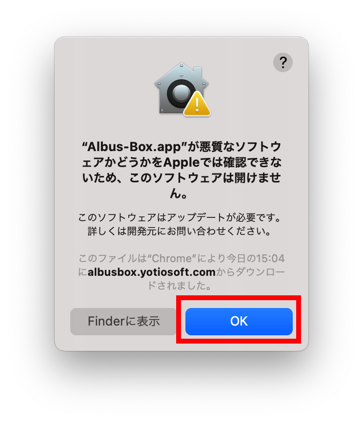
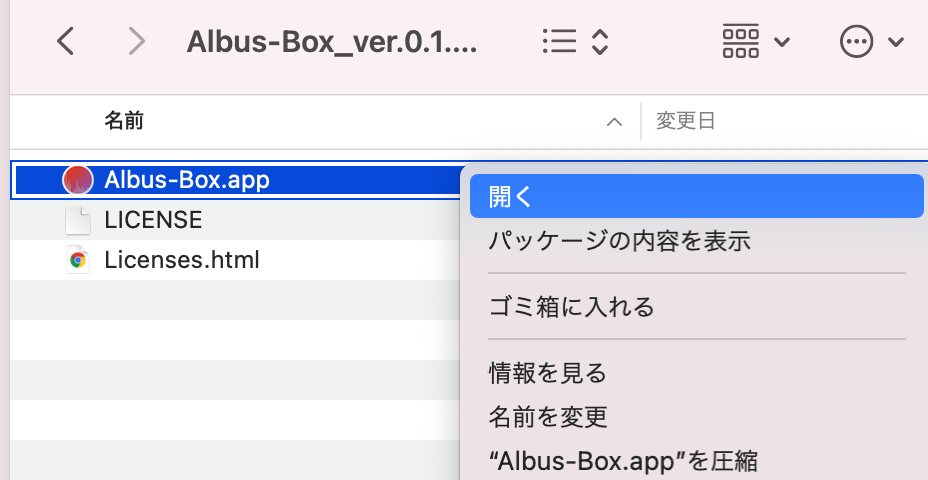
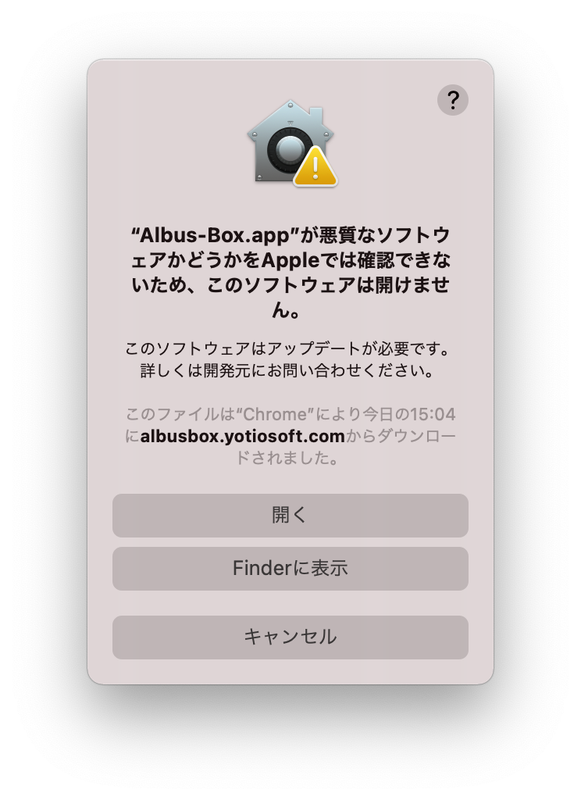
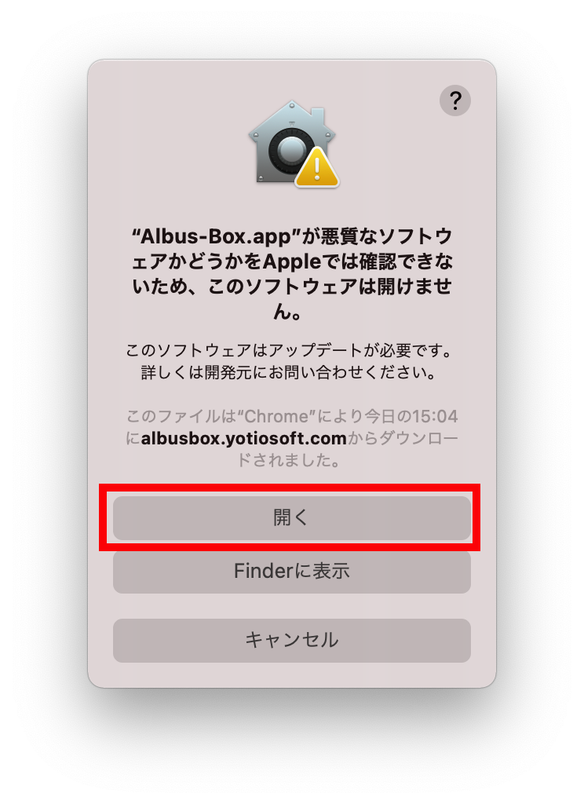

macOS
公開日：2022年1月31日
macOSでアプリケーションを実行する際に、「"〇〇（アプリ名）.app"が悪質なソフトウェアかどうかをAppleでは確認できないため、このソフトウェアは開けません。」と表示されることがあります。
原因
macOS 10.15 Catalina以降では、セキュリティの強化に伴いApp Storeからダウンロードされたアプリケーション、
およびAppleによって開発元が認証されたアプリケーション以外の、いわゆる「野良アプリ」ではこのような警告が表示されるようになりました。
これはGatekeeperのセキュリティ保護機能によるもので、開発元が不明なアプリケーションに対して必ず表示される警告です。
一見するとアプリが開けないように見えますが、手順を踏んでアプリを開けば、以降このような警告は表示されなくなります。
これはGatekeeperのセキュリティ保護機能によるもので、開発元が不明なアプリケーションに対して必ず表示される警告です。
一見するとアプリが開けないように見えますが、手順を踏んでアプリを開けば、以降このような警告は表示されなくなります。
解決手順
右クリックメニューからアプリを開くことで実行が可能になります。
以下、Albus Box（
以降、通常通りダブルクリックによってアプリを起動した場合でも、警告が表示されることなく利用可能になります。
以下、Albus Box（
Albus-Box.app
）を実行する例を示しております。-
「OK」を選択し警告を閉じます。

-
ファイルを右クリックしてメニューを表示し、「開く」を選択します。

-
「開く」という選択肢が追加された同様の警告が表示されます。

-
「開く」を選択すると起動します。



以降、通常通りダブルクリックによってアプリを起動した場合でも、警告が表示されることなく利用可能になります。
関連項目

macOS
「"〇〇.app"は壊れているため開けません。」と表示される
macOSでappファイルが開けない場合の対処法です。

macOS
Macで設定が反映されない・セーブデータが保存できない
macOSで設定が反映されないときや、セーブデータが保存できない場合の対処法です。